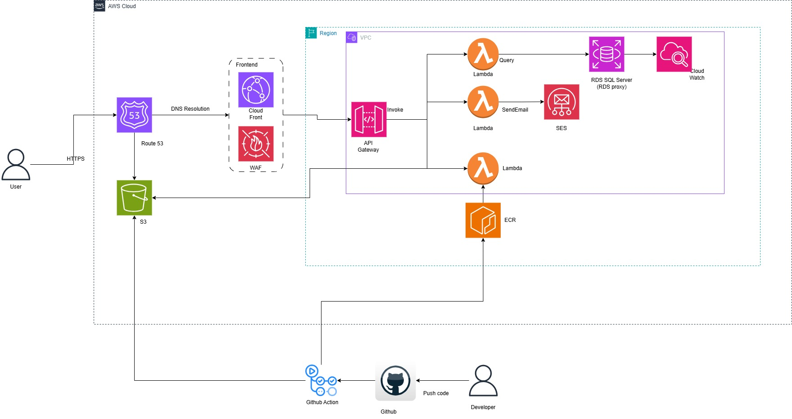

Bản đề xuất
1. BỐI CẢNH VÀ ĐỘNG LỰC
1.1 TÓM TẮT ĐIỀU HÀNH
Bối cảnh Khách hàng
GameTracker là một nền tảng được thiết kế cho người chơi game và quản trị viên (admin) để quản lý, theo dõi và chia sẻ thông tin về nhân vật, vũ khí, banner, vật phẩm và sự kiện.
Mục tiêu Kinh doanh và Kỹ thuật
- Quản lý tập trung: Tạo ra một hệ thống tập trung để quản lý dữ liệu game hiệu quả.
- Khả năng tiếp cận: Giúp người dùng dễ dàng tiếp cận thông tin, đặc biệt là với các game ngôn ngữ tiếng Anh vốn là rào cản với nhiều người.
- Hiệu quả: Giảm thời gian bảo trì thủ công và nâng cao độ tin cậy của dữ liệu cho admin.
- Khả năng mở rộng: Xây dựng hệ thống có thể mở rộng cho nhiều game và tính năng cộng đồng sử dụng kiến trúc serverless.
Các trường hợp sử dụng (Use Cases)
- Người chơi: Theo dõi lịch sử gacha, giả lập rút thẻ (pull), xem dòng thời gian (timeline) banner/sự kiện.
- Admin: Quản lý dữ liệu game (CRUD) với phân quyền truy cập rõ ràng.
Dịch vụ Chuyên nghiệp của Đối tác
Chúng tôi sẽ cung cấp một ứng dụng web full-stack được host trên AWS, sử dụng các công nghệ serverless (Lambda, S3, RDS) để đảm bảo chi phí vận hành thấp và tính sẵn sàng cao.
1.2 TIÊU CHÍ THÀNH CÔNG CỦA DỰ ÁN
- Ổn định hệ thống: Hệ thống ổn định, tự động mở rộng với chi phí bảo trì thấp.
- Bảo mật: API bảo mật với quản lý dữ liệu tập trung và kiểm soát truy cập theo vai trò.
- Trải nghiệm người dùng: Các công cụ gacha và timeline hoạt động tốt, giúp người chơi theo dõi sự kiện thuận tiện.
- Khả năng mở rộng: Kiến trúc sẵn sàng để mở rộng thêm nhiều game và tính năng mới.
1.3 GIẢ ĐỊNH
- Điều kiện tiên quyết: Quyền truy cập tài khoản AWS với các quyền cần thiết để triển khai.
- Phụ thuộc: Dịch vụ xác thực bên thứ ba (Google OAuth2).
- Ràng buộc: Ràng buộc về ngân sách yêu cầu phương pháp tiếp cận serverless chi phí thấp.
- Rủi ro: Độ trễ tiềm ẩn khi khởi động lạnh (cold start) của Lambda (giảm thiểu bằng warmers), chi phí RDS (giảm thiểu bằng việc chọn instance phù hợp).
2. KIẾN TRÚC GIẢI PHÁP / SƠ ĐỒ KIẾN TRÚC
2.1 SƠ ĐỒ KIẾN TRÚC KỸ THUẬT
Kiến trúc Cấp cao Đề xuất:
Giải pháp áp dụng kiến trúc cloud-native hiện đại:
- Frontend: React SPA được phục vụ qua S3 + CloudFront, được bảo vệ bởi AWS WAF.
- Backend: Spring Boot serverless triển khai trên AWS Lambda, sử dụng JWT và Google OAuth2 để xác thực.
- Database: SQL Server trên AWS RDS.
- Lưu trữ: AWS S3 để lưu trữ tài sản tĩnh (avatar, background, vũ khí).
- Bảo mật: AWS WAF, IAM và Spring Security.

Các Dịch vụ AWS Sử dụng:
- AWS S3, AWS Lambda, AWS RDS, AWS CloudFront, AWS WAF, AWS SES, AWS IAM.
2.2 KẾ HOẠCH KỸ THUẬT
Chúng tôi sẽ phát triển các script sử dụng AWS CDK/CloudFormation hoặc quy trình thiết lập thủ công được tài liệu hóa để đảm bảo khả năng lặp lại.
- Frontend: React, TypeScript, Vite.
- Backend: Spring Boot, Spring Security.
- DevOps: Docker, CI/CD pipelines.
Tất cả các luồng quan trọng bao gồm đăng nhập người dùng, đồng bộ dữ liệu và giả lập gacha sẽ được bao phủ bởi các bài kiểm thử (test coverage) sâu rộng.
2.3 KẾ HOẠCH DỰ ÁN
Dự án sẽ tuân theo phương pháp Agile trong khoảng thời gian 1 tháng.
- Tuần 1: Lập kế hoạch, Phân tích yêu cầu, Thiết kế kiến trúc.
- Tuần 2: Phát triển Backend (API, Auth, Database).
- Tuần 3: Phát triển Frontend (UI/UX, Admin Dashboard, Công cụ).
- Tuần 4: Triển khai, Kiểm thử, Tài liệu hóa và Bàn giao.
2.4 CÂN NHẮC VỀ BẢO MẬT
Các phương pháp hay nhất được triển khai:
- Định danh: Tích hợp Google OAuth2 và JWT cho xác thực stateless an toàn.
- Hạ tầng: AWS WAF để bảo vệ chống lại các khai thác web phổ biến.
- Kiểm soát truy cập: Kiểm soát truy cập dựa trên vai trò (RBAC) cho Admin và User.
- Bảo vệ dữ liệu: Mã hóa HTTPS khi truyền tải; Mã hóa RDS khi lưu trữ.
- Giám sát: AWS CloudWatch cho logs và metrics.
3. HOẠT ĐỘNG VÀ BÀN GIAO
3.1 HOẠT ĐỘNG VÀ BÀN GIAO
| Giai đoạn Dự án |
Thời gian |
Hoạt động |
Sản phẩm bàn giao/Mốc quan trọng |
| Đánh giá & Thiết lập |
Tuần 1 |
Phân tích yêu cầu, thiết kế kiến trúc, thiết lập AWS (S3, RDS, Lambda) |
Sơ đồ kiến trúc, Môi trường AWS Sẵn sàng |
| Triển khai Backend |
Tuần 2 |
Xây dựng Lambda functions, API endpoints, tích hợp Auth, DB schema |
API hoạt động, Kết nối cơ sở dữ liệu |
| Triển khai Frontend |
Tuần 3 |
Phát triển React SPA, tạo Dashboard, logic công cụ Gacha |
Giao diện Web, Dashboard quản trị |
| Kiểm thử & Go-live |
Tuần 4 |
Kiểm thử tích hợp, tối ưu bảo mật, triển khai lên CloudFront |
Ứng dụng đã triển khai, Hướng dẫn sử dụng, Tài liệu |
3.2 NGOÀI PHẠM VI (OUT OF SCOPE)
- Phát triển Ứng dụng Di động (Mobile App iOS/Android native).
- Tính năng máy chủ game multiplayer thời gian thực (chỉ quản lý dữ liệu trên web).
- Tích hợp trực tiếp với máy chủ game (dữ liệu được quản lý/nhập thủ công).
3.3 ĐƯỜNG ĐẾN PROD (PATH TO PRODUCTION)
Đề xuất hiện tại phác thảo con đường đến một MVP sẵn sàng cho production.
- POC đến Prod: Hệ thống được thiết kế đạt chuẩn production ngay từ đầu bằng cách sử dụng các dịch vụ managed của AWS.
- Khoảng trống: Cần kiểm thử tải thêm (load testing) và tinh chỉnh các quy tắc WAF dựa trên mô hình lưu lượng truy cập thực tế.
- Vận hành: Xử lý lỗi và giám sát được thực hiện thông qua CloudWatch.
4. DỰ KIẾN CHI PHÍ AWS THEO DỊCH VỤ
Ước tính Chi phí Hàng tháng: ~$121-123/tháng
- AWS Lambda: ~$5-7 (Memory: 3008 MB, ~12k invocations).
- S3 Standard: ~$0.23 (10 GB lưu trữ).
- CloudFront: ~$8.50 (100 GB egress).
- RDS (SQL Server): ~$60+ (db.t3.medium hoặc tương đương).
- AWS WAF: ~$10 (Web ACL + requests).
- NAT Gateway: ~$32 (nếu cần cho Lambda trong VPC).
- Khác (SES, Route53, CloudWatch): ~$6.
Lưu ý: Chi phí là ước tính và phụ thuộc vào mức sử dụng thực tế và khu vực (region).
5. ĐỘI NGŨ (TEAM)
Đội ngũ Dự án Đối tác
| Tên |
Chức danh |
Vai trò |
Email / Thông tin liên hệ |
| [Tên] |
Delivery Manager |
Quản lý dự án |
[Email] |
| [Tên] |
Sr. Solutions Architect |
Trưởng nhóm kỹ thuật |
[Email] |
Các bên liên quan của Dự án
| Tên |
Chức danh |
Bên liên quan cho |
Email / Thông tin liên hệ |
| [Tên] |
[Chức danh] |
[Vai trò] |
[Email] |
6. TÀI NGUYÊN & ƯỚC TÍNH CHI PHÍ
| Tài nguyên |
Trách nhiệm |
Đơn giá (USD) / Giờ |
| Solution Architect |
Thiết kế hệ thống & Dẫn dắt |
- |
| Full-stack Engineer |
Triển khai thực hiện |
- |
Tổng nỗ lực ước tính: [Tổng số ngày công]
7. CHẤP NHẬN (ACCEPTANCE)
Sau khi hoàn thành một Giai đoạn, Đối tác sẽ gửi các Sản phẩm bàn giao hữu hình liên quan cho Khách hàng. Khách hàng sẽ xem xét, đánh giá và kiểm thử các Sản phẩm bàn giao trong vòng tám (8) ngày làm việc (“Thời gian Chấp nhận”) để xác định xem có thỏa mãn các tiêu chí chấp nhận hay không.
Nếu Sản phẩm bàn giao thỏa mãn các tiêu chí chấp nhận, Khách hàng sẽ cung cấp xác nhận chấp nhận bằng văn bản. Nếu bị từ chối, Khách hàng sẽ chỉ ra lý do chi tiết và Đối tác sẽ khắc phục các lỗi. Nếu không có thông báo từ chối nào được nhận trong Thời gian Chấp nhận, các Sản phẩm bàn giao được coi là đã được chấp nhận.